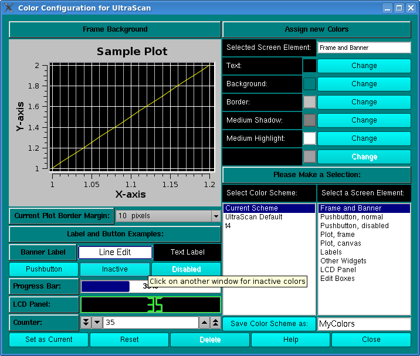

Manual
Manual
Manual
Manual

The color configuration control can be invoked from the configuration panel by clicking on the Change button from the color preferences option.
The panel has two sections, a preview section (on the left) and a control section (on the right). With this module you can select custom color combinations for all screen elements (widgets) used by UltraScan and save them as custom color schemes. You can also set the desired margin around graphs.
To change a widget's color, select the widget you would like to change from the screen element listbox. All applicable colors for that widget will be shown in the Assign new Colors section. Click on the Change button for the desired color definition of the selected widget. A color dialog will be displayed that lets you select and define custom colors for the selected color definition. After you click on the "OK" button you will be returned to the color configuration control window and the new color will be applied to the preview section of the screen. Continue to define new colors for each widget until all color changes you want to make have been applied.
To reset to the previous color definition, click on the Reset button. Click on "Set as Current" to apply the colors to the current scheme. If you want to save the scheme, define a name (without spaces) under Save Color Scheme as: and click on the Save Color Scheme as: button. Keep in mind that certain names are reserved for predefined UltraScan color schemes, and they cannot be overridden.
The number of colors that can be simultaneously displayed on the screen depends on your display adapter's memory and resolution. Common display settings are 16 bit (65536 colors), and 24 bit (~16.8 million colors).
If you want to delete a custom scheme, select the scheme and click on the Delete button. Predefined UltraScan schemes cannot be deleted. To select a different scheme from the list of available color schemes, simply double click on the desired scheme and click on the Save as Current button.